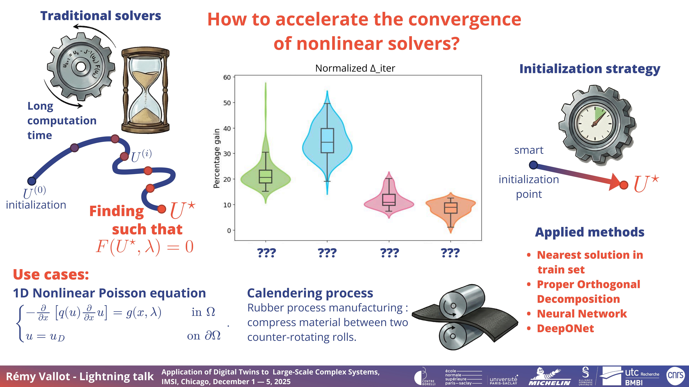
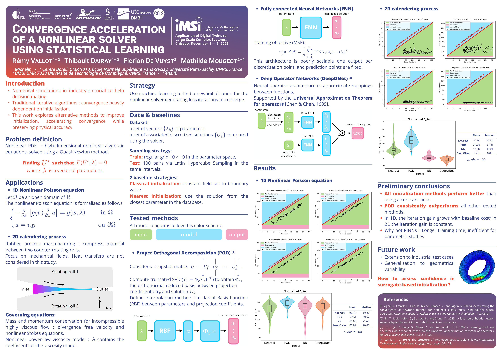
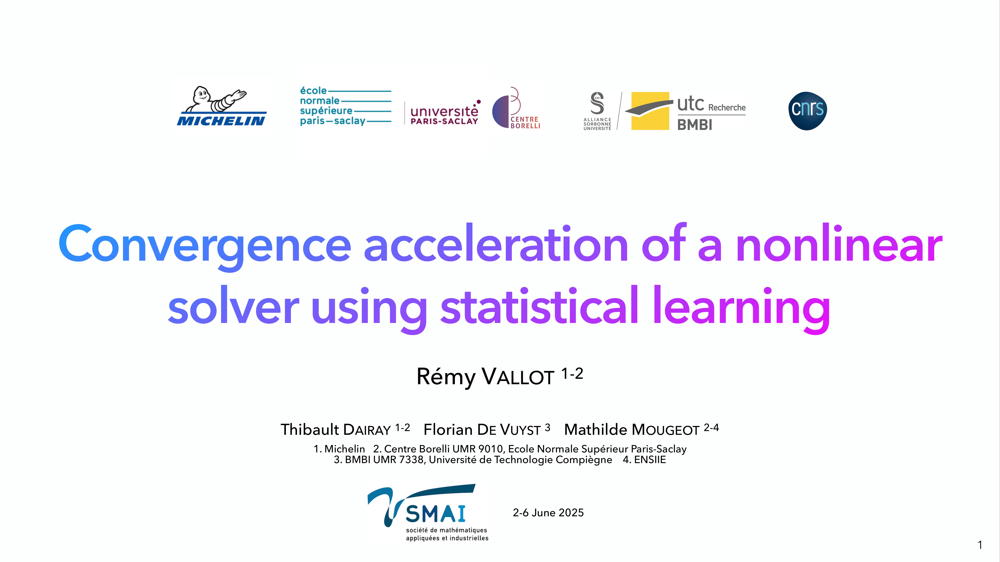

Highlights
Publications & Articles
2026
Rémy Vallot, Florian De Vuyst, Thibault Dairay , Mathilde Mougeot
Abstract
It is well known that Newton's method converges faster when the initial guess is closer to a root of a system of nonlinear equations. In this paper, a two-stage Newton initial guess strategy is proposed by learning features from a parameter-space sampling and a database of precomputed solutions. The method uses discrete Newton trajectories to construct two complementary reduced spaces: a solution feature space, built from converged states, and a corrective search direction feature space, built from intermediate Newton increments. For an unseen parameter, a regression model is used to predict a surrogate solution approximation. Then, in a second step, a residual-minimizing correction is computed using a dedicated GMRES-based approach. The resulting state is then used as an initial guess for the high-fidelity Newton method, which completes convergence. The corrective step is computationally inexpensive since it only requires residual evaluations and the solution of a small least-squares problem. The methodology is weakly intrusive once the high-fidelity residual fields and a script-based programming interface are available. This strategy reduces the number of Newton iterations and decreases the overall CPU time. Numerical experiments on representative PDE problems show quantifiable speedups compared with standalone surrogate initialization. Significant speedups are observed. This generic approach can be applied to a broad class of large-scale nonlinear problems.
Edgar Jaber, Rémy Vallot, Thibault Dairay , Mathilde Mougeot
Abstract
Non-intrusive reduced-order models (NIROMs) have become a standard tool for approximating parametric partial differential equations from computer design of experiments while significantly reducing computational costs. However, assessing the reliability of their predictions remains a major challenge, particularly in extrapolation regimes or under limited training data. In this work, we introduce a framework for quantifying model-form uncertainty in NIROMs by combining a perturbative stochastic representation of reduced bases with distribution-free conformal-type methods. Starting from a deterministic reduced basis constructed from snapshot matrices, we model uncertainty through random perturbations defined on the Stiefel manifold, directed along the discarded modes, yielding stochastic reduced-order approximations whose induced variance reflects the basis-truncation error. A transport approximation gives a closed-form posterior variance that sepa- rates basis-induced from regression-induced uncertainty, without re-training the underlying Gaussian processes. We include this posterior variance within a conformal risk control calibration framework, that provides prediction sets with coordinate miscoverage guarantees. The calibration factor produced by this framework is itself an interpretable, scalar diagnostic of the quality of the uncertainty estimate. The methodology is evaluated on parametric PDE benchmarks and an industrial tire-manufacturing calendering process. Numerical experiments demonstrate reliable, locally informative uncertainty quantification that goes beyond the Gaussian predictive variance.
Talks & Posters
2025
Lightning talk introducing my poster on convergence acceleration using initialization strategies.

Presented a poster on convergence acceleration using initialization strategies and comparing the different proposed methods.

Oral presentation of my ongoing work on convergence acceleration using initialization strategies and comparing the different proposed methods.

Presented a poster on convergence acceleration using initialization strategies and comparing the different proposed methods.

Talk on my ongoing research, problem description, and initialization methods.
Presented a literature review to Michelin’s internal research team.
Short video presentation of my PhD topic for MathTech academic–industrial meetings.
2024
Poster presentation on early results of my PhD work.